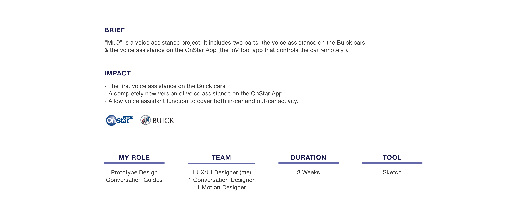
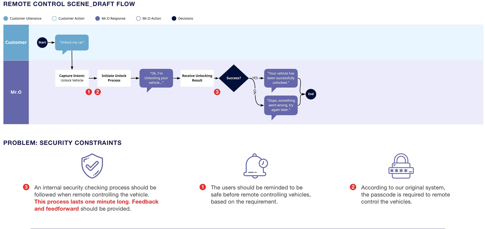
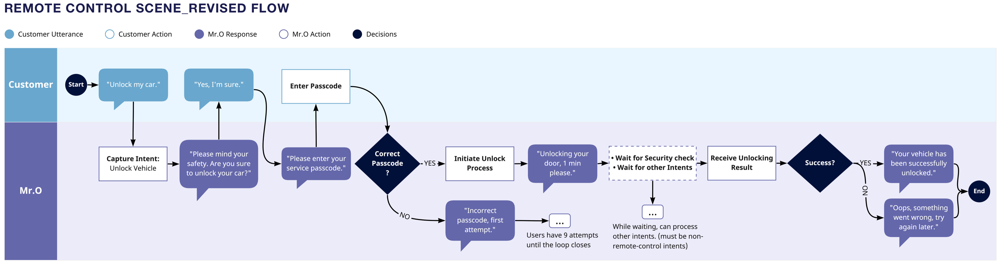
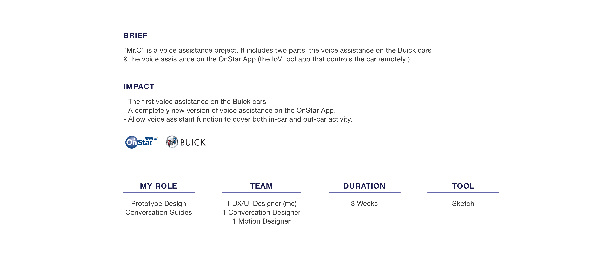
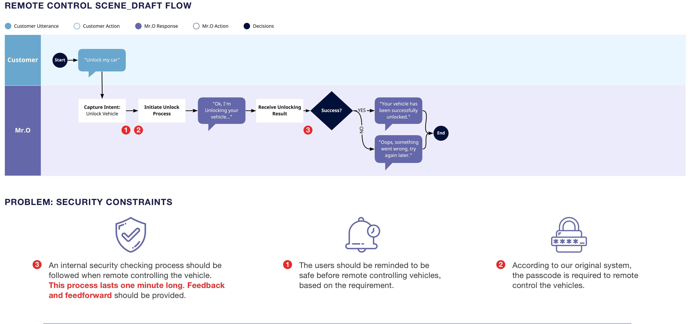
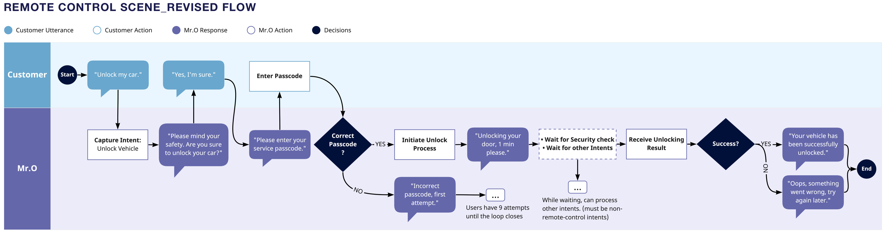

Xiao O
 






Overview
“Mr.O” is a voice assistance project. It includes two parts: the voice assistance on the Buick cars & the voice assistance on the OnStar App (the IoV tool app that controls the car remotely )
Requirement
- Design the interface for the 118 listed user scenarios. (These user scenarios include car condition checking scenarios, navigation scenarios, remote car control scenarios, etc. )
- Promote OnStar App's functions that are less used by the users.
- Enhance Mr.O's IP image as a voice assistance.